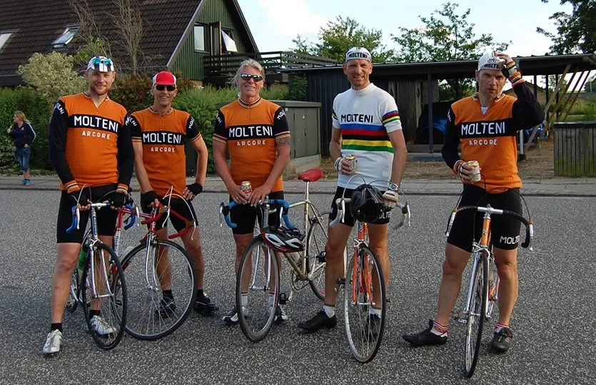
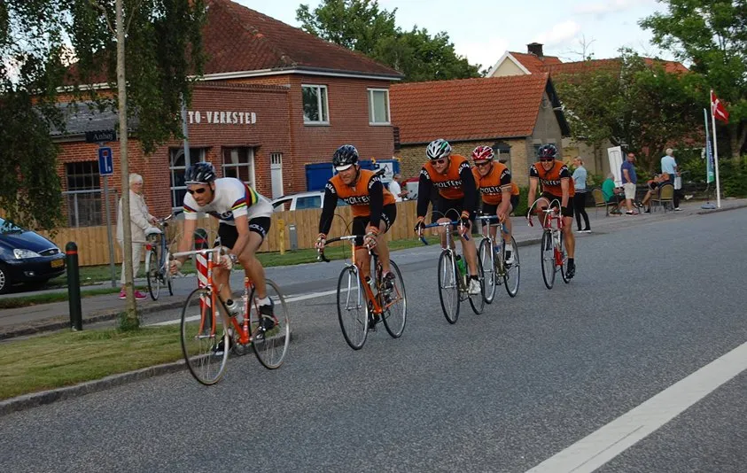

Løbsberetning: DGI Holdløb i Lund 2014

Squadra Molteni stillede til start ved denne uges DGI Holdbøb i Lund. En meget svær rute, der ville få flere professionelle cykelryttere til, at kræve løbet neutraliseret kort efter start.
Squadra Molteni gav den fuld gas – og kørte et godt holdløb.
Løbet bestod af en 2 x 19 km. rundstrækning på små snoede og meget kuperede landeveje vest for Horsens.
Squadra Molteni ankom i god tid til Lund. En dejlig sommeraften; let vind og kun få skyer. Vi fik gjort cyklerne og os selv klar til en let opvarmningstur.

Peter Meinert var så venlig, at informere os om, at det var en god ide, at køre ruten igennem inden start – da den indeholdt en del bakker og sving på specielt sidste halvdel.
Peter spottede dog også lynhurtigt, at to Molteni’s ryttere havde sorte sokker på! Han af informerede om, at der i hans tid – og helt op mod 1990’erne – blev uddelt UCI-bøder til ryttere, som stillede til start i farvede sokker.
Squadra Molteni stiller ikke til start igen i farvede sokker. Vi trillede ud på en opvarmningsomgang – og fik hurtigt set, at der var tale om en meget teknisk og svær holdløbsrute.
Én omgang var 18 km – og på små snoede sogneveje med mange små bakker – og specielt én lang på godt 1200 meter. Ruten skulle gennemkøres to gange.
Fumleri i starten
Starten gik 18:40 og vi kom efter lidt fumleri ind i en god formation. Ved bakkerne fandt vi hurtigt ud af, at det gjalt om at være særlig opmærksom på hinanden.
Et hold er kun så godt, som hele holdet til sammen – så det gjalt virkelig om at finde ind i en rytme og tempo, hvor alle kunne være med.

Karsten Ellerup havde rollen som Capitaine de Route – og han fik dirigeret tropperne godt. De mange små bakker og vinden tog godt på kræfterne, men hele holdet kæmpede hvad de kunne.
Vi kom i mål i den tiden 1:08:42 – hvilket var godt 9 minutter fra vindertiden på 0:59:42. Men vores tid var dog nok til en placering som nummer 9 ud af de 12 hold som stillede til start.
Vinder af stålklassen
I resultatslisten for korrigeret tid i forhold til alder og køn, endte vi som nummer 11. Vi vandt dog unde diskussion stål-klassen…
Squadra Molteni siger tak for – sender stor ros til DGI for et godt arrangement og god og spændende rute.